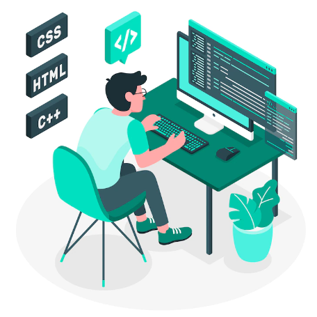

The Journey of an Aspiring Web Developer
September 27, 2025 by Ashsean Anderson
My journey into web development started with curiosity about how websites are built and designed. I was fascinated by the way simple code could create something interactive and visually engaging. As I began exploring HTML, CSS, and JavaScript, I quickly realized that web development is a perfect blend of creativity and problem-solving.
Over time, I have been practicing by creating small projects, experimenting with layouts, and learning how to make websites more user-friendly. Each step motivates me to dig deeper into frameworks, libraries, and the best practices that professional developers use every day.